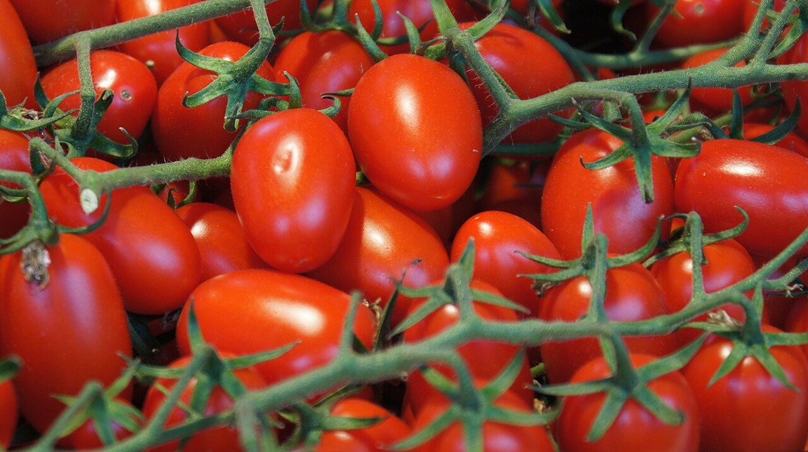
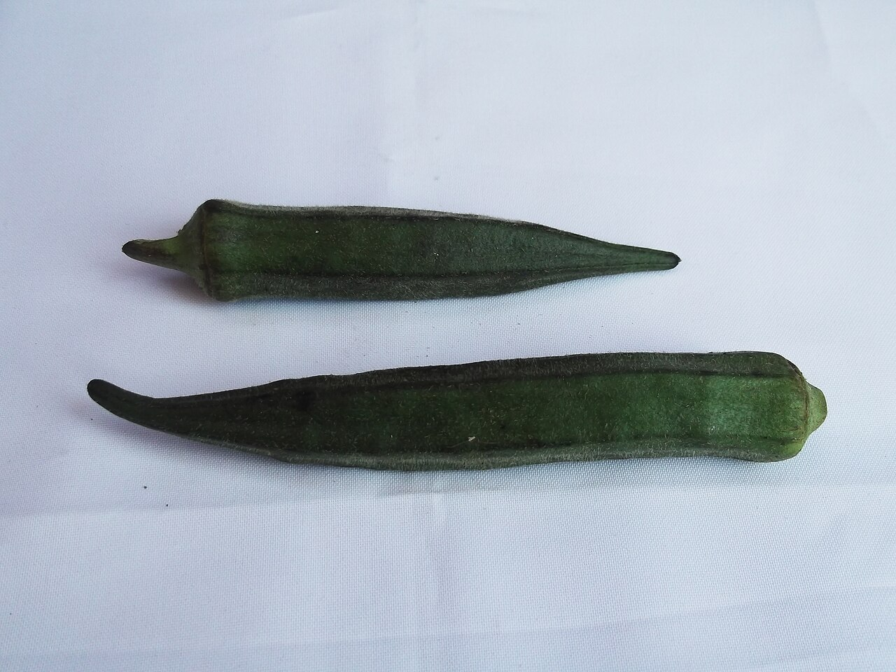
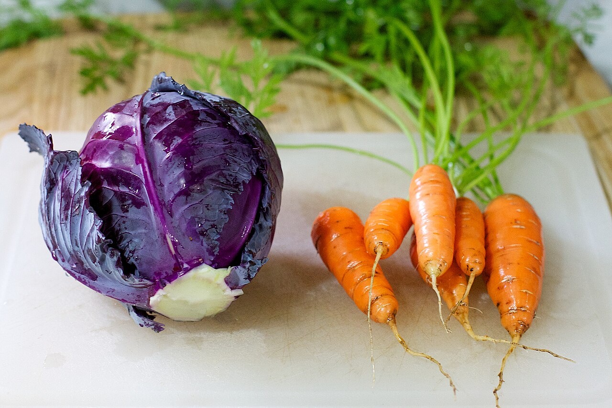
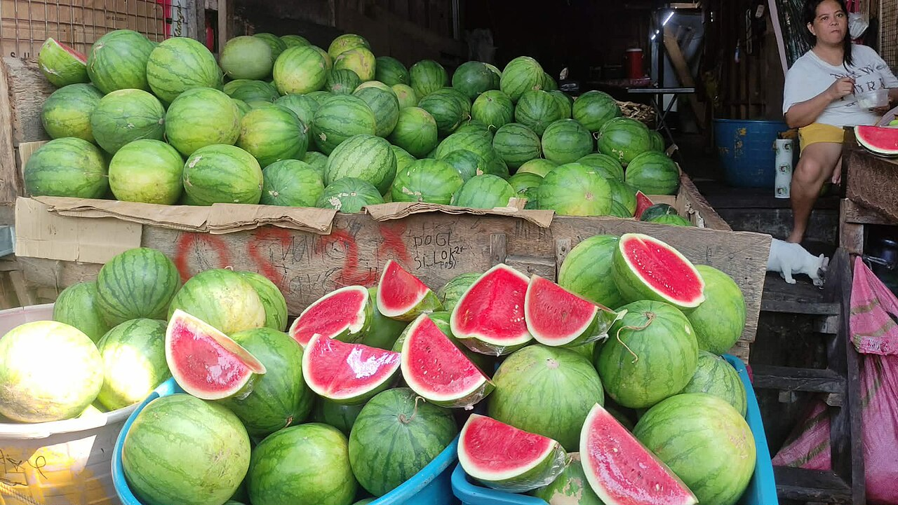
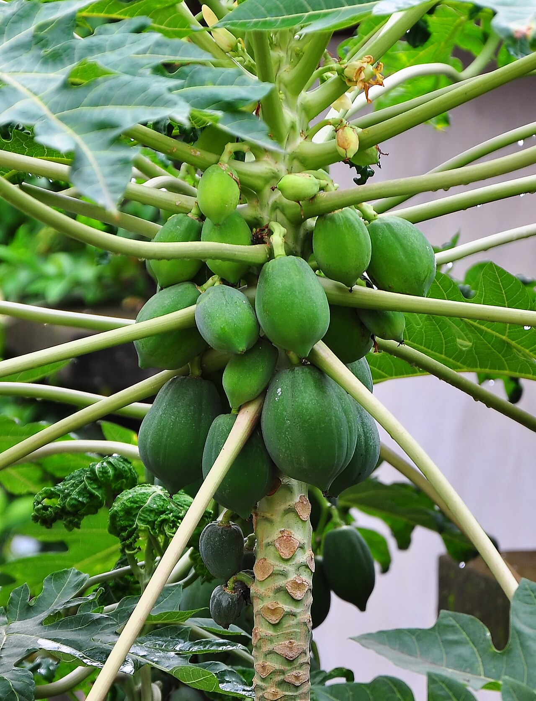
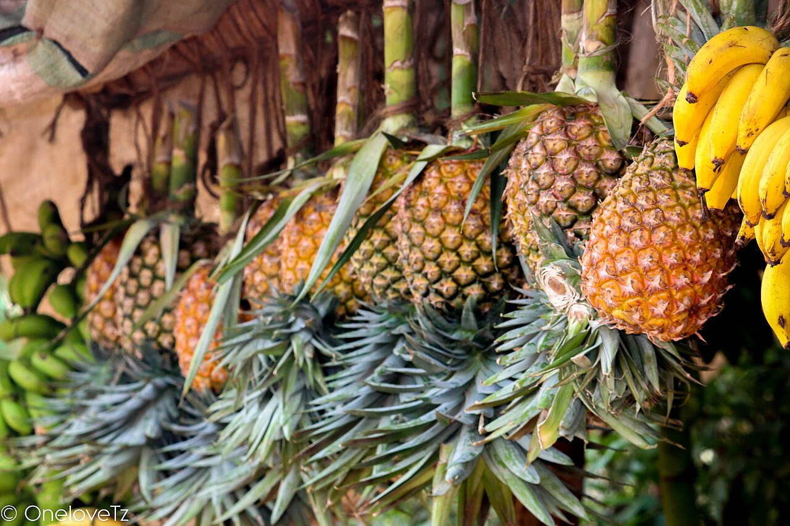
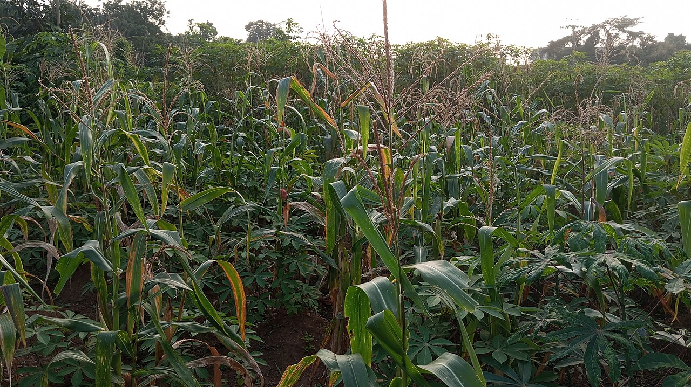

—
- Agriculture
- Élevage
- Conseils
- Marchés
Réussissez votre projet agricole en Côte d'Ivoire
Fiches cultures et élevage, prix du marché, météo et conseil agricole. Des réponses sourcées, avec leurs limites — et jamais un dosage inventé.
15 crédits gratuits toutes les 7 heures · sans carte bancaire
Conseil
Décrivez votre situation, on s'occupe du reste.
Choisissez votre localité, puis décrivez la parcelle ou l'élevage. La réponse est rendue par l'Agent Agronome Expert, avec ses sources, ses hypothèses et ses limites.
Cultures & épices
20 fiches disponibles
Cultures et épices à fort potentiel, photos et repères réels.
Vivrières peu plantées, épices, légumes et fruits : peu d'intrants, meilleure valeur au kilo. Filtrez par famille, puis ouvrez une fiche pour le cycle, les atouts et le débouché.
Cultiver hors sol — huit systèmes et cinq tutoriels pas à pas →

Voandzou
Pois bambara, pois de terre
Légumineuse très rustique : elle fixe l'azote, supporte la sécheresse et se conserve longtemps sans traitement. Utile en rotation avant une céréale.
- Cycle
- 90 à 120 jours
- Atouts
- peu d'intrants, résiste au sec, enrichit le sol
- Débouché
- graines, farine, bouillie ; demande urbaine stable
Fiche complète : climat, itinéraire, récolte, budget →
Photo : Crop Trust · CC BY-SA 4.0 · Wikimedia

Fonio
La céréale la plus fine
Pousse sur des sols pauvres et sableux, mûrit vite et demande peu d'eau — un recours quand la saison est courte.
- Cycle
- 60 à 90 jours
- Atouts
- rustique, très précoce, bon prix au kilo
- Débouché
- restauration, farines, marchés urbains et export
Fiche complète : climat, itinéraire, récolte, budget →
Photo : Crop Trust · CC BY-SA 4.0 · Wikimedia

Sésame
Oléagineux d'export
Le point critique n'est pas la production mais la récolte : choisir des variétés à capsules qui ne s'ouvrent pas, récolter dès maturité, sécher sur bâche.
- Cycle
- 90 à 110 jours
- Atouts
- peu d'eau, demande à l'export, prix au kilo élevé
- Débouché
- huile, pâtisserie, export (qualité et propreté du lot)
Fiche complète : climat, itinéraire, récolte, budget →
Photo : Joydeep · CC BY-SA 3.0 · Wikimedia

Patate douce à chair orange
Vitamine A, transformation
Rendement rapide sur sol léger, riche en bêta-carotène. Deux marchés : le frais et la transformation en farine ou purée.
- Cycle
- 90 à 120 jours
- Atouts
- couvre le sol, peu d'intrants, bonne valeur nutritionnelle
- Débouché
- frais, farine, programmes nutrition, écoles
Fiche complète : climat, itinéraire, récolte, budget →
Photo : Prosperosity · CC BY 4.0 · Wikimedia

Soja
Oléagineux et protéine animale
Filière soutenue par le FIRCA depuis 2022 : la production nationale reste très inférieure à la demande des huileries et de l'aliment du bétail. Culture associée au maïs, elle enrichit aussi le sol en azote.
- Cycle
- 90 à 110 jours
- Atouts
- fixe l'azote, débouché industriel, prix de contrat possible
- Débouché
- huileries, provende, semence certifiée
Fiche complète : climat, itinéraire, récolte, budget →
Pourquoi maintenant : FIRCA (filière soja) ; USDA FAS - Oilseeds Annual 2025 — source
Photo : Forest and Kim Starr · CC BY 3.0 us · Wikimedia

Igname
La culture vivrière à plus fort revenu
Le PNIA classe l'igname parmi les filières au plus fort potentiel d'augmentation du revenu agricole. Elle demande un sol meuble et profond, et une bonne maîtrise des boutures pour éviter les pertes au stockage.
- Cycle
- 7 à 9 mois
- Atouts
- forte valeur marchande, demande urbaine constante
- Débouché
- marchés urbains, cossettes, transformation en farine
Fiche complète : climat, itinéraire, récolte, budget →
Pourquoi maintenant : PNIA (Programme national d'investissement agricole) — source
Photo : Dorcas Atule · CC BY-SA 4.0 · Wikimedia

Banane plantain
Demande urbaine en croissance
Le PNIA retient aussi la banane plantain parmi les filières à fort potentiel de revenu. Cycle court, régimes récoltés toute l'année : intéressante pour lisser la trésorerie entre deux campagnes de rente.
- Cycle
- 10 à 12 mois (rejets successifs)
- Atouts
- récolte étalée, bon rendement à l'hectare
- Débouché
- frais, alloco, chips, marchés urbains
Fiche complète : climat, itinéraire, récolte, budget →
Pourquoi maintenant : PNIA (Programme national d'investissement agricole) — source
Photo : BorisAhonon · CC BY-SA 4.0 · Wikimedia

Poivre noir
Piper nigrum — liane à tuteurer
Liane tropicale conduite sur tuteur, à l'ombre légère. Baies vertes séchées = poivre noir ; baies dépulpées = poivre blanc. Production ivoirienne encore marginale : valider le débouché avant de planter.
- Cycle
- entrée en production 3 à 4 ans
- Atouts
- prix au kilo très élevé, valorise l'ombrage
- Débouché
- épiceries fines, restauration, export
Fiche complète : climat, itinéraire, récolte, budget →
Photo : K Hari Krishnan · CC BY-SA 3.0 · Wikimedia

Gingembre
Zingiber officinale — rhizome
Rhizome cultivé sur sol meuble et humide, récolté à maturité des tiges. Forte demande locale pour les jus et boissons, et bonne valeur une fois séché et broyé.
- Cycle
- 8 à 10 mois
- Atouts
- demande locale forte, transformation simple
- Débouché
- marchés urbains, jus et boissons, cosmétique
Fiche complète : climat, itinéraire, récolte, budget →
Photo : Kayleemariev · CC0 · Wikimedia

Curcuma
Curcuma longa — rhizome orangé
Proche du gingembre, rhizome orangé séché puis broyé : épice, colorant, usage cosmétique. Transformation possible avec un simple séchoir et un moulin.
- Cycle
- 8 à 9 mois
- Atouts
- transformation simple, demande croissante
- Débouché
- poudre, épiceries, cosmétique
Fiche complète : climat, itinéraire, récolte, budget →
Photo : Simon A. Eugster · CC BY-SA 3.0 · Wikimedia

Piment
Capsicum spp. — frais ou séché
Arbuste à récolte étalée : le séchage permet de lisser les ventes et d'éviter de brader au pic de production. Choisir une variété dont le piquant correspond au marché local.
- Cycle
- 4 à 6 mois, récolte étalée
- Atouts
- cycle court, demande urbaine constante
- Débouché
- frais, séché, transformation
Fiche complète : climat, itinéraire, récolte, budget →
Photo : Prenn · CC BY-SA 3.0 · Wikimedia

Tomate
Solanum lycopersicum — culture de rente maraîchère
Premier légume-fruit de rente en Côte d'Ivoire : marché urbain constant, transformation possible (concentré, séchage).
- Cycle
- 90 à 120 jours en saison des pluies, 100 à 130 jours en contre-saison
- Atouts
- Récolte étalée, marché urbain constant, transformation possible
- Débouché
- Culture à forte valeur mais à risque élevé : le coût des traitements et des tuteurs pèse lourd.
Fiche complète : climat, itinéraire, récolte, budget →
Photo : domdomegg · CC BY 4.0 · Wikimedia

Oignon
Allium cepa — bulbe de conservation
Bulbe qui se conserve plusieurs mois : il permet de vendre après la récolte, quand les prix montent. Demande une terre fine, un repiquage soigné et un séchage rigoureux.
- Cycle
- 90 à 150 jours selon variété et saison
- Atouts
- Se conserve plusieurs mois : on vend quand le prix monte
- Débouché
- La valeur vient du stockage : vendre 1 à 3 mois après récolte paye souvent mieux que la vente immédiate, à condition d'avoir un local sec.
Fiche complète : climat, itinéraire, récolte, budget →
Photo : Samsule2 · CC BY-SA 4.0 · Wikimedia

Gombo
Abelmoschus esculentus — le légume-fruit du quotidien
Culture robuste et rentable en petites surfaces : la récolte commence tôt et se répète toutes les semaines. Très demandé sur les marchés urbains, frais ou séché.
- Cycle
- 60 à 90 jours pour les premières récoltes, production étalée sur 2 à 3 mois
- Atouts
- Récolte hebdomadaire dès 60 jours, frais ou séché
- Débouché
- Bon revenu à l'hectare grâce à la récolte étalée ; le séchage permet de lisser les ventes et d'éviter de brader au pic.
Fiche complète : climat, itinéraire, récolte, budget →
Photo : Yercaud-elango · CC BY-SA 4.0 · Wikimedia

Aubergine africaine
Solanum aethiopicum / S. melongena — le « gboma » des sauces
Légume-fruit de base des sauces ivoiriennes : les variétés locales africaines (amères ou douces) sont très demandées. Rustique, productive, moins exigeante que la tomate.
- Cycle
- 90 à 120 jours, récolte étalée
- Atouts
- Rustique et productive, base des sauces ivoiriennes
- Débouché
- Débouché local solide, y compris auprès des restaurants de rue. Calculer la marge avec le prix du marché de gros de la semaine.
Fiche complète : climat, itinéraire, récolte, budget →
Photo : John Atherton · CC BY-SA 2.0 · Wikimedia

Chou
Brassica oleracea — pomme de saison fraîche
Légume-feuille très demandé en saison fraîche et en zone d'altitude. Culture exigeante en eau et en azote, sensible aux chenilles.
- Cycle
- 75 à 100 jours après repiquage
- Atouts
- Demandé en saison fraîche et en altitude, cycle court
- Débouché
- Prix sensible à l'offre : éviter d'arriver en même temps que tout le monde sur le marché, échelonner les repiquages.
Fiche complète : climat, itinéraire, récolte, budget →
Photo : cogdogblog · CC BY 2.0 · Wikimedia

Pastèque
Citrullus lanatus — culture de saison sèche
Fruit très demandé en saison chaude, adapté aux sols sableux et à l'irrigation localisée. Une culture de trésorerie quand l'eau est maîtrisée.
- Cycle
- 75 à 100 jours
- Atouts
- Saison chaude, sols sableux, forte demande
- Débouché
- Bonne valeur en pleine saison chaude ; attention au transport (fruits lourds, chargement soigné).
Fiche complète : climat, itinéraire, récolte, budget →
Photo : PAULIX04 · CC BY-SA 4.0 · Wikimedia

Papaye
Carica papaya — fruit toute l'année
Fruit qui produit toute l'année après la première floraison : intéressant pour la trésorerie régulière. Deux marchés : fruit mûr et papaye verte (légume, transformation).
- Cycle
- 8 à 12 mois jusqu'à la première récolte, production ensuite continue
- Atouts
- Fruit toute l'année après la première floraison
- Débouché
- Production régulière mais prix bas en pleine saison : la transformation (papaye verte râpée, séchée) améliore la valeur.
Fiche complète : climat, itinéraire, récolte, budget →
Photo : Joydeep · CC BY-SA 3.0 · Wikimedia

Ananas
Ananas comosus — fruit d'export et de marché local
Fruit emblématique de la Côte d'Ivoire, avec un marché local solide et une filière d'export structurée. Culture de longue durée : elle immobilise la parcelle plus d'un an.
- Cycle
- 12 à 18 mois selon le matériel de plantation
- Atouts
- Marché local solide et filière d'export structurée
- Débouché
- Filière d'export exigeante en qualité et en volume ; pour le marché local, la vente en morceaux prêts à consommer valorise mieux le fruit.
Fiche complète : climat, itinéraire, récolte, budget →
Photo : Rasheed hamis · CC BY-SA 4.0 · Wikimedia

Manguier
Mangifera indica — l'arbre de la saison sèche
Arbre fruitier pérenne : un investissement long mais qui produit pendant des décennies. La mangue ivoirienne a un marché local, régional et export (campagne de contre-saison).
- Cycle
- 3 à 5 ans avant la première production, puis arbre pérenne
- Atouts
- Arbre pérenne, production pendant des décennies
- Débouché
- Rentabilité à long terme : la première production arrive après 3 à 5 ans. Prévoir l'entretien des jeunes arbres sans revenu immédiat.
Fiche complète : climat, itinéraire, récolte, budget →
Photo : daSupremo · CC BY-SA 4.0 · Wikimedia
 Culture de rente
Culture de rente
Cacao
Theobroma cacao — la fève d'export des zones forestières
Culture de rente majeure du Sud forestier, conduite sous ombrage : la fermentation et le séchage décident du prix autant que le rendement.
- Cycle
- 3 à 4 ans avant la première récolte, verger productif 20 à 30 ans
- Atouts
- Filière structurée, production étalée sur l'année
- Débouché
- Prix bord champ fixé par campagne : vérifier le barème officiel en vigueur.
Fiche complète : climat, itinéraire, récolte, budget →
Photo : shankar s. from Dubai, united arab emirates · CC BY 2.0 · Wikimedia

Nouvelle ficheMaïs
Zea mays — la céréale de soudure
Céréale de base cultivée dans toutes les zones, de l'alimentation familiale à la vente et à l'aliment du bétail.
- Cycle
- 75 à 110 jours selon la variété
- Atouts
- Toutes zones, cycle court, association possible avec une légumineuse
- Débouché
- Vente après récolte ou stockage bien conduit pour lisser le prix.
Fiche complète : climat, itinéraire, récolte, budget →
Photo : LightPens · CC BY-SA 4.0 · Wikimedia
Prix des épices : aucun relevé officiel ivoirien n'est publié régulièrement. Nous ne donnons donc aucun prix au kilo pour ces cultures — demandez un devis à un acheteur ou renseignez-vous auprès de l'ANADER avant de planter.
Hors sol
Cultiver sans terre, avec une eau maîtrisée.
Le hors sol remplace le sol par un substrat ou par une solution nutritive. Il sert quand la terre manque (cour, ville, sol pauvre ou fatigué), quand l'eau doit être comptée au litre, ou pour produire en continu. Il ne supprime ni le travail ni le suivi : il déplace l'attention vers l'eau, la nutrition et l'hygiène du matériel.
- Ce qu'il apporte une production au m² plus élevée, des cycles courts, peu de mauvaises herbes, et la possibilité de cultiver en ville.
- Ce qu'il exige de l'eau propre et régulière, une solution nutritive suivie, du matériel désinfecté et un capital de départ.
- Ce qu'il ne fait pas il n'écarte pas les ravageurs, il ne pardonne pas un mauvais drainage, et il ne rend pas rentable une culture sans marché.
À savoir avant de dépenser un franc
- Dose de solution nutritive ne jamais dépasser la dose inscrite sur l'étiquette du fabricant, et verser toujours le produit dans l'eau, jamais l'inverse.
- Sans mesure, pas de mélange si vous n'avez pas de bandelettes EC/pH, restez à la dose de l'étiquette et ne composez pas votre propre recette.
- Une coupure d'eau ou de pompe asphyxie les racines en quelques heures en pleine chaleur : prévoyez une réserve et un arrosage de secours.
- Solution tiède au-dessus d'environ 30 °C, l'eau tient moins d'oxygène : ombragez le réservoir, ne le laissez pas au soleil.
- Hygiène du matériel désinfectez bacs et réservoir entre deux cycles et n'utilisez pas le substrat d'un cycle malade.
Les systèmes possibles en Afrique de l'Ouest
Culture en sacs de substrat
Des sacs de 40 à 50 kg remplis de substrat local, percés sur le côté pour l'évacuation de l'eau. Deux à quatre plants par sac selon la culture.
Limite le sac sèche vite et se remplace ; un sac mal percé noie les racines.
Bacs et tables surélevées
Des bacs de 30 à 40 cm de profondeur posés sur des parpaings ou une structure en bois. Arrosage manuel ou goutte-à-goutte, travail debout.
Limite le volume de substrat chauffe en plein soleil : prévoir un paillage.
Goutte-à-goutte sur substrat
Un substrat léger (coco, pouzzolane, sable grossier) alimenté par des micro-tubes, depuis un bidon surélevé ou une petite pompe.
Limite un tube bouché assèche un plant sans signe visible avant deux jours.
Radeau flottant et NFT
Les racines baignent dans une solution nutritive circulante (NFT) ou dans un bac couvert d'un radeau. Cultures courtes et légères.
Limite sans courant électrique stable, le système s'arrête et les plants grillent en une matinée.
Tours verticales et gouttières
Des étages de bouteilles, de gouttières ou de sacs empilés, arrosés en cascade du haut vers le bas. Gain de place sur une terrasse.
Limite le haut sèche plus vite que le bas : l'arrosage doit être vérifié étage par étage.
Aquaponie
Les déjections des poissons nourrissent des bactéries qui transforment l'ammoniac en nitrates pour les plantes ; l'eau revient aux poissons.
Limite aucun pesticide ni antibiotique dans le système : un seul traitement mal choisi tue le poisson et la colonie de bactéries.
Pépinière hors sol
Plateaux alvéolés et substrat fin à l'ombre : des plants réguliers, repiqués au bon stade, pour toutes les cultures du site.
Limite un plateau trop arrosé fait fondre les jeunes plants en une nuit (fonte des semis).
Micro-pousses
Des plateaux peu profonds, semés dense, récoltés en 7 à 21 jours. Peu de lumière, beaucoup de demande en restauration urbaine.
Limite le produit est fragile : il faut vendre et livrer vite, en froid.
Tutoriels pas à pas
1 Monter un bac de substrat
- Choisir un emplacement à 5 ou 6 heures de soleil, près d'un point d'eau, sur un sol nivelé.
- Poser le bac sur des parpaings ou une structure solide, à 40 cm du sol : le dos vous remerciera.
- Mettre 3 à 5 cm de gravier au fond, puis une toile ou un géotextile : l'eau doit sortir, le substrat non.
- Remplir avec un mélange de compost mûr et de matière drainante (coque de riz, sable grossier) sans tasser.
- Planter, arroser doucement jusqu'à ce que l'eau ressorte, puis laisser ressuyer avant le prochain arrosage.
2 Préparer et suivre la solution nutritive
- Remplir le réservoir d'eau claire ; si l'eau est chlorée, la laisser reposer une nuit à l'air libre.
- Lire l'étiquette du fabricant et respecter la dose indiquée. Ne jamais doubler « pour aller plus vite ».
- Verser chaque produit séparément dans l'eau, en remuant, jamais l'un dans l'autre.
- Mesurer avec des bandelettes EC/pH et noter les valeurs, la date et la quantité d'eau.
- Renouveler la solution tous les 7 à 10 jours : vider, rincer, refaire. Une solution vieille attire les maladies.
Sans bandelettes ni étiquette lisible, ne composez pas de mélange vous-même : gardez la dose du fabricant et faites valider par un technicien.
3 Semer en plateau alvéolé
- Humidifier le substrat fin avant de remplir les alvéoles : il doit être frais, pas détrempé.
- Semer une ou deux graines par alvéole, couvrir d'une fine couche, puis tasser légèrement.
- Placer à l'ombre claire, arroser en pluie fine deux fois par jour, sans noyer.
- Repiquer quand la plantule a deux à quatre vraies feuilles, aux heures fraîches.
- Sevrer deux à trois jours avant le repiquage : moins d'eau, plus de lumière, pour endurcir le plant.
4 Installer un goutte-à-goutte simple
- Surélever un bidon de 20 à 60 litres à environ un mètre au-dessus des plants.
- Poser une rampe et un micro-tube par plant, fixé au pied sans le boucher.
- Faire un test de dix minutes et noter le volume écoulé, pour connaître la dose réelle.
- Régler deux à trois arrosages par jour selon la chaleur et le stade de la culture.
- Nettoyer le filtre et rincer les tubes chaque semaine : c'est là que tout se bouche.
5 Enchaîner deux cycles propres
- Vider bacs et réservoir, retirer les racines et les débris, laver à l'eau claire.
- Désinfecter selon la dose de l'étiquette du produit utilisé, puis rincer abondamment.
- Repartir sur un substrat neuf, ou sur un substrat composté plusieurs mois, jamais celui d'un cycle malade.
- Décaler les semis de deux semaines pour éviter le trou de production entre deux récoltes.
- Noter dates, doses, incidents et résultats : c'est ce carnet qui rend le troisième cycle meilleur.
Limites assumées. Ces repères sont généraux et ne remplacent pas une visite de parcelle. Le coût réel d'un système hors sol dépend du matériel disponible sur place, du prix de l'eau et de l'électricité : chiffrez-le localement avant d'investir. Pour un projet financé, faites valider le dimensionnement par un technicien (ANADER, centre de recherche agricole) et vérifiez la demande du marché avant de produire.
Élevage
Conduire un élevage, sans improviser la santé
Sept espèces, trois volets : la conduite, les tutoriels de mise en route et la santé. Les repères chiffrés sont donnés en ordres de grandeur à confirmer localement ; la vaccination, les traitements et la déclaration d'une maladie relèvent du vétérinaire.
Volaille
Poulet de chair, pondeuses et volaille locale améliorée. La poussinière décide de la bande : température, densité et eau propre font plus que n'importe quel traitement.
Conduite
- Préchauffer le local avant l'arrivée des poussins ; viser un ordre de grandeur de 33 à 35 °C la première semaine, puis baisser de 2 à 3 °C par semaine (à confirmer localement).
- Lire le comportement plutôt que le thermomètre : entassés = trop froid, haletants en bordure = trop chaud, répartis = bonne ambiance.
- Densité d'engraissement de l'ordre de 8 à 12 sujets/m² en climat chaud ; pondeuses de l'ordre de 5 à 7 sujets/m² en claustration (ordres de grandeur à confirmer).
- Aliment en trois phases : démarrage riche et digestible, croissance progressive, finition plus énergétique et moins protéique.
- Eau fraîche en permanence : c'est souvent le premier facteur limitant en climat chaud ; abreuvoirs lavés chaque jour.
- Ventiler sans courant d'air sur les poussins ; litière humide et odeur d'ammoniac signalent une ventilation insuffisante.
- Biosécurité : un seul âge par bâtiment si possible, bottes et matériel dédiés, quarantaine à l'entrée, visiteurs limités.
- Tenir un cahier de bande : effectif, mortalité du jour, aliment consommé, traitements et dates. C'est ce carnet qui révèle un problème avant la perte.
Erreurs de débutant
- Densifier pour « rentabiliser » le bâtiment : la mortalité et l'indice de consommation se dégradent.
- Changer d'aliment sans transition : diarrhées et chute de croissance.
- Traiter sans diagnostic : coût inutile et résidus dans les œufs ou la viande.
Sources : Base de connaissances AGROGUIDCI (production_animale.md) — à confirmer avec un vétérinaire · mise à jour 2026-10-26
Tutoriels
- 1Préparer le bâtiment
Nettoyer, désinfecter, sécher, poser une litière neuve et vérifier le chauffage avant l'arrivée des poussins.
- 2Mettre en place les poussins
Eau tiède et aliment fin à disposition, éclairage suffisant, observer la répartition pendant deux heures.
- 3Régler ambiance et densité
Ajuster chauffage et ventilation chaque semaine, réduire la densité à mesure que les sujets grandissent.
- 4Conduire l'alimentation
Distribuer la ration par phase, noter les quantités, contrôler l'indice de consommation en fin de bande.
- 5Contrôle sanitaire quotidien
Retirer les sujets morts, observer fientes, respiration et comportement, consigner la mortalité du jour.
- 6Collecte et vente
Œufs ramassés plusieurs fois par jour et stockés à l'ombre ; volaille pesée et vendue sur un marché identifié à l'avance.
- 7Calculer le coût de production
Additionner poussins, aliment, litière, eau, électricité, santé et main-d'œuvre, puis diviser par le poids vif vendu.
Série numérotée : bâtiment, mise en place, ration, conduite quotidienne, contrôle sanitaire, valorisation, coût de production.
Santé et vaccins
Calendrier indicatif à confirmer auprès d'un vétérinaire ou du service technique de votre zone. Les protocoles peuvent évoluer.
| Âge ou période | Intervention | Voie | Fréquence | Précautions | Source |
|---|---|---|---|---|---|
| Maladie de Marek | J1, au couvoir | Injection au couvoir | Une seule fois | Fait au couvoir : l'éleveur ne refait pas ce vaccin | Base interne — principe de prophylaxie |
| Newcastle | J7 à J10 | Eau de boisson ou goutte oculaire | Rappels avant la sortie de poussinière | Chaîne du froid, eau propre, sujet en bonne santé | Base interne — principe de prophylaxie |
| Gumboro (bursite) | J14 | Eau de boisson | Rappel selon le protocole du vétérinaire | Respecter le délai entre vaccins et la qualité de l'eau | Base interne — principe de prophylaxie |
| Variole aviaire | Selon le risque local | Transfixion | Selon avis vétérinaire | Décision liée à la pression locale | Base interne — principe de prophylaxie |
Les noms de vaccins ci-dessus sont des principes de prophylaxie ; la disponibilité, la souche et le protocole exact se confirment auprès du vétérinaire ou du service technique. Aucune posologie, aucun antibiotique n'est indiqué ici.
Urgence animale
Contactez rapidement un vétérinaire ou le service technique de votre zone. Isolez les animaux atteints et n'attendez pas une réponse en ligne pour un cas urgent.
Porcin
Cycle court et forte demande urbaine, mais la peste porcine africaine impose une biosécurité stricte : aucun vaccin n'existe contre cette maladie.
Conduite
- Bâtiment surélevé, sol cimenté et lavable, pente vers l'évacuation, toiture isolée : le porc supporte mal la chaleur.
- Séparer les bandes et respecter une circulation du propre vers le sale ; bottes et matériel par zone.
- Alimenter selon le stade (démarrage, croissance, finition, truie) et contrôler la qualité des matières premières : moisissures et toxines sont des causes fréquentes d'échec.
- Ne jamais donner de restes de cuisine non cuits : c'est un risque majeur de peste porcine africaine.
- Eau propre en permanence, abreuvoirs nettoyés ; un porc sans eau mange moins et grossit mal.
- Reproduction : truie et verrat en bon état, mise-bas dans une case propre et sèche, surveillance des porcelets dans les premières heures.
- Quarantaine de tout animal introduit, contrôle avant achat, pas d'entrée de visiteurs dans les cases.
- Tenir un registre : entrées, sorties, mortalité, traitements, poids. Il conditionne la vente et la traçabilité.
Erreurs de débutant
- Acheter un animal sans quarantaine pour compléter un lot : c'est le premier vecteur d'introduction.
- Utiliser des déchets de cuisine crus.
- Confondre « pas de vaccin » et « rien à faire » : la biosécurité est la seule protection contre la PPA.
Sources : Base de connaissances AGROGUIDCI (production_animale.md) — à confirmer avec un vétérinaire · mise à jour 2026-10-26
Tutoriels
- 1Construire les cases
Sol cimenté, pente, point d'eau, ventilation haute, séparation des bandes.
- 2Préparer une bande
Nettoyer, désinfecter, sécher, prévoir litière et matériel dédiés.
- 3Formuler la ration
Choisir les matières premières disponibles, équilibrer énergie et protéines, contrôler l'absence de moisissures.
- 4Conduire au quotidien
Nourrir à heures fixes, contrôler l'eau, observer appétit, respiration et fientes.
- 5Contrôle sanitaire
Prendre la température si un porc reste couché, isoler immédiatement, appeler le vétérinaire en cas de mortalité inhabituelle.
- 6Vendre au bon poids
Peser ou estimer, identifier le marché, organiser le transport sans stress ni blessure.
- 7Calculer le coût de production
Porcelet, aliment, santé, eau, main-d'œuvre, amortissement du bâtiment.
Série numérotée : bâtiment, mise en place, ration, conduite quotidienne, contrôle sanitaire, valorisation, coût de production.
Santé et vaccins
Calendrier indicatif à confirmer auprès d'un vétérinaire ou du service technique de votre zone. Les protocoles peuvent évoluer.
Un point à connaître absolument
La peste porcine africaine (PPA) n'a pas de vaccin : aucun protocole vaccinal ne doit être présenté comme protecteur. Toute suspicion (mortalité brutale, fièvre, rougeurs, animaux couchés) impose une alerte immédiate au vétérinaire et aux services officiels, l'isolement des animaux et l'arrêt des mouvements. Les autres maladies du porc relèvent d'un diagnostic vétérinaire : aucun traitement ni dosage n'est proposé ici.
Urgence animale
Contactez rapidement un vétérinaire ou le service technique de votre zone. Isolez les animaux atteints et n'attendez pas une réponse en ligne pour un cas urgent.
Bovin
Élevage extensif ou semi-intensif, avec des enjeux sanitaires collectifs : la péripneumonie contagieuse bovine et le charbon se traitent d'abord par la prévention et la déclaration.
Conduite
- Choisir des animaux adaptés à la zone (races locales et croisements rustiques) plutôt qu'une race exigeante sur un terroir difficile.
- Bâtiment ou parc avec ombre, abri contre la pluie, sol non glissant et point d'eau accessible : le stress thermique fait chuter la production.
- Pâturage tournant et complémentation en saison sèche ; surveiller la charge pour éviter la dégradation du couvert.
- Eau propre à volonté ; un bovin boit beaucoup et supporte mal une eau stagnante.
- Reproduction : détection des chaleurs, lutte raisonnée, suivi des gestations, surveillance de la mise-bas.
- Hygiène : rotation des parcs, gestion du fumier, contrôle des tiques et des mouches.
- Identification des animaux (boucles ou marques) et registre d'élevage : indispensable pour la vaccination et la vente.
- Commercialisation planifiée : poids, marché, transport, délai d'attente après traitement.
Erreurs de débutant
- Introduire un animal sans quarantaine ni contrôle sanitaire.
- Attendre les signes graves avant d'appeler le vétérinaire.
- Manipuler une carcasse suspecte de charbon sans précaution.
Sources : Base de connaissances AGROGUIDCI (production_animale.md) — à confirmer avec un vétérinaire · mise à jour 2026-10-26
Tutoriels
- 1Préparer le parc et l'eau
Clôture, ombre, abreuvoir propre et accessible, sol drainé.
- 2Conduire le pâturage
Découper en parcelles, respecter la repousse, complémenter en saison sèche.
- 3Reproduction
Observer les chaleurs, noter les dates, préparer la mise-bas.
- 4Contrôle sanitaire
Examiner les animaux à distance chaque jour, isoler les malades, consigner.
- 5Vaccination et déclaration
Suivre les campagnes du service vétérinaire, déclarer toute suspicion.
- 6Valoriser la production
Lait ou viande : choisir la filière avant d'investir, calculer le coût par litre ou par kilo.
- 7Calculer le coût de production
Alimentation, santé, gardiennage, eau, amortissement, pertes.
Série numérotée : bâtiment, mise en place, ration, conduite quotidienne, contrôle sanitaire, valorisation, coût de production.
Santé et vaccins
Calendrier indicatif à confirmer auprès d'un vétérinaire ou du service technique de votre zone. Les protocoles peuvent évoluer.
| Âge ou période | Intervention | Voie | Fréquence | Précautions | Source |
|---|---|---|---|---|---|
| Péripneumonie contagieuse bovine | Campagne annuelle dans les zones concernées | Injection (voie selon le vaccin) | Selon le calendrier des services vétérinaires | Quarantaine des animaux introduits, déclaration des cas | Base interne — principes de prévention |
| Charbon bactéridien et symptomatique | Campagne annuelle selon avis vétérinaire | Injection | Selon avis vétérinaire | Ne jamais manipuler une carcasse suspecte sans précaution | Base interne — principes de prévention |
Les dates et la périodicité exactes dépendent des campagnes officielles de votre zone : elles se confirment auprès du vétérinaire ou du service technique. Aucun antibiotique ni dosage n'est indiqué ici.
Urgence animale
Contactez rapidement un vétérinaire ou le service technique de votre zone. Isolez les animaux atteints et n'attendez pas une réponse en ligne pour un cas urgent.
Ovin et caprin
Petits ruminants rustiques, adaptés aux zones sèches et à l'élevage familial. La conduite repose sur le pâturage, l'abreuvement et la maîtrise de la reproduction.
Conduite
- Choisir des animaux de la zone : les races locales résistent mieux à la chaleur et aux parcours pauvres.
- Abri simple, sec, ventilé, avec une aire d'exercice ; éviter l'humidité permanente.
- Pâturage tournant avec complémentation en saison sèche (fourrage conservé, résidus de culture).
- Eau propre chaque jour : un petit ruminant mal abreuvé mange moins.
- Reproduction : lutte en saison favorable, suivi des mises-bas, sevrage progressif.
- Parasitisme : surveiller l'état corporel et les signes d'anémie, alterner les parcours, traiter sur avis vétérinaire.
- Clôture ou gardiennage : la divagation est la première cause de perte et de conflit.
- Registre simple : entrées, naissances, ventes, mortalité, traitements.
Erreurs de débutant
- Laisser divaguer les animaux en saison des cultures.
- Traiter au hasard contre les parasites sans diagnostic ni conseil.
- Négliger l'eau en saison sèche.
Sources : Base de connaissances AGROGUIDCI (production_animale.md) — à confirmer avec un vétérinaire · mise à jour 2026-10-26
Tutoriels
- 1Construire l'abri
Toit, sol sec, ventilation, aire d'exercice, point d'eau.
- 2Mettre en place le troupeau
Trier par âge, vermifuger selon avis, identifier les animaux.
- 3Conduire le pâturage
Parcelles tournantes, complémentation en saison sèche.
- 4Reproduction
Détecter les chaleurs, noter les dates, préparer les mises-bas.
- 5Contrôle sanitaire
État corporel, boiteries, diarrhées, toux : isoler et appeler en cas de doute.
- 6Vente
Poids, marché, transport, délai d'attente après traitement.
- 7Coût de production
Alimentation, santé, gardiennage, pertes.
Série numérotée : bâtiment, mise en place, ration, conduite quotidienne, contrôle sanitaire, valorisation, coût de production.
Santé et vaccins
Calendrier indicatif à confirmer auprès d'un vétérinaire ou du service technique de votre zone. Les protocoles peuvent évoluer.
Vaccination : à confirmer localement
La peste des petits ruminants peut être couverte par des campagnes de vaccination selon la zone, mais la disponibilité et le calendrier ne sont pas documentés ici de façon vérifiée : demandez au vétérinaire ou au service technique quels vaccins sont réellement disponibles et à quel moment vacciner. Aucun protocole n'est publié à la place d'une source vérifiée.
Urgence animale
Contactez rapidement un vétérinaire ou le service technique de votre zone. Isolez les animaux atteints et n'attendez pas une réponse en ligne pour un cas urgent.
Pisciculture
Étangs, bacs ou cages : la qualité de l'eau commande tout. Un poisson stressé tombe malade, et l'eau se dégrade plus vite qu'on ne le voit.
Conduite
- Choisir le site : sol retenant l'eau, pente douce, source ou forage fiable, accès au marché.
- Préparer le fond de l'étang (séchage, chaulage selon conseil technique, fertilisation maîtrisée) avant la mise en eau.
- Densité adaptée à l'espèce et au renouvellement d'eau : mieux vaut moins de poissons et une eau saine.
- Alevins de qualité, acclimatés progressivement à la température de l'étang.
- Alimentation régulière et suffisante ; un excès d'aliment pollue l'eau et consomme l'oxygène.
- Surveiller l'eau : transparence, odeur, couleur, comportement des poissons en surface le matin.
- Filets et matériel dédiés, éviter de déplacer des poissons entre bassins sans précaution.
- Pêche, tri, conditionnement et vente organisés à l'avance : le poisson ne se stocke pas longtemps.
Erreurs de débutant
- Surdensifier et compter sur l'aliment pour compenser.
- Attendre que les poissons viennent en surface pour agir sur l'eau.
- Introduire des poissons de provenance inconnue sans contrôle.
Sources : Base de connaissances AGROGUIDCI (production_animale.md) — à confirmer avec un vétérinaire · mise à jour 2026-10-26
Tutoriels
- 1Choisir et préparer le site
Sol, eau, pente, accès ; séchage et préparation du fond.
- 2Mettre en eau
Remplissage, contrôle de la qualité, fertilisation selon conseil.
- 3Empoissonner
Alevins de qualité, acclimatation, densité prudente.
- 4Nourrir
Ration régulière, observation de la consommation, retrait des restes.
- 5Surveiller l'eau
Contrôle visuel quotidien, oxygène le matin, réaction aux pluies.
- 6Pêcher et vendre
Filets propres, tri, conditionnement, marché identifié.
- 7Calculer le coût de production
Alevins, aliment, eau, main-d'œuvre, amortissement, pertes.
Série numérotée : bâtiment, mise en place, ration, conduite quotidienne, contrôle sanitaire, valorisation, coût de production.
Santé et vaccins
Calendrier indicatif à confirmer auprès d'un vétérinaire ou du service technique de votre zone. Les protocoles peuvent évoluer.
Santé du poisson : prévention avant traitement
La santé en pisciculture passe par la qualité de l'eau, la densité et l'aliment, pas par des médicaments. Aucun vaccin ni traitement n'est publié ici : en cas de mortalité, de lésions ou de comportement anormal, contactez le service technique ou un vétérinaire spécialisé avant toute intervention.
Urgence animale
Contactez rapidement un vétérinaire ou le service technique de votre zone. Isolez les animaux atteints et n'attendez pas une réponse en ligne pour un cas urgent.
Apiculture
Production de miel, artisanale ou semi-moderne. L'encadrement technique reste faible : mieux vaut démarrer petit, se former et sécuriser la vente avant d'investir.
Conduite
- Installer les ruches à l'écart des passages, avec eau à proximité et flore mellifère disponible.
- Travailler avec un équipement de protection complet : voile, gants, enfumoir.
- Ouvrir les ruches aux heures chaudes, sans vent, et le moins possible.
- Laisser aux colonies assez de miel pour survivre à la saison sèche.
- Récolter uniquement les rayons operculés, sans détruire le couvain.
- Filtrer et laisser décanter le miel, puis conditionner dans des pots propres et secs.
- Surveiller les prédateurs et les vols entre ruches ; réduire les entrées si nécessaire.
- Noter les dates de récolte et les quantités pour suivre la progression du rucher.
Erreurs de débutant
- Récolter tout le miel : les colonies meurent en saison sèche.
- Travailler sans protection ni enfumoir.
- Chauffer ou diluer le miel pour gagner du volume.
Sources : Base de connaissances AGROGUIDCI (production_animale.md) — à confirmer avec un vétérinaire · mise à jour 2026-10-26
Tutoriels
- 1Choisir le site
Éloignement, flore, eau, sécurité des personnes et des animaux.
- 2Installer les ruches
Supports surélevés, orientation, protection contre le soleil direct.
- 3Conduire une visite
Enfumage doux, ouverture limitée, observation de la reine et des réserves.
- 4Récolter
Retrait des hausses, brossage, transport couvert vers le lieu d'extraction.
- 5Extraire et filtrer
Matériel propre, filtration, décantation, conditionnement.
- 6Protéger le rucher
Surveillance des prédateurs, réduction des entrées, entretien.
- 7Calculer le coût de production
Ruches, protection, cire, pots, transport, main-d'œuvre.
Série numérotée : bâtiment, mise en place, ration, conduite quotidienne, contrôle sanitaire, valorisation, coût de production.
Santé et vaccins
Calendrier indicatif à confirmer auprès d'un vétérinaire ou du service technique de votre zone. Les protocoles peuvent évoluer.
Santé des colonies
Les maladies et parasites des abeilles ne se diagnostiquent pas en ligne. Aucun traitement n'est publié ici : en cas de colonies qui dépérissent, de couvain anormal ou de mortalité soudaine, faites appel à un apiculteur expérimenté ou au service technique agricole de votre zone.
Urgence animale
Contactez rapidement un vétérinaire ou le service technique de votre zone. Isolez les animaux atteints et n'attendez pas une réponse en ligne pour un cas urgent.
Escargot
Élevage d'escargots (achatiniculture) encore peu documenté en Côte d'Ivoire : la demande urbaine existe, mais l'accompagnement technique est rare.
Conduite
- Partir d'un petit nombre de reproducteurs et vérifier la réglementation locale avant toute commercialisation.
- Prévoir un local ombragé, humide et clos, avec un sol meuble et une litière propre.
- Alimenter avec des végétaux frais et variés, lavés, sans pesticide.
- Maintenir une humidité constante sans excès d'eau stagnante.
- Éviter la surdensité : elle favorise la mortalité et les épidémies.
- Nettoyer régulièrement et retirer les individus morts immédiatement.
- Prévoir la transformation ou la vente rapide : l'escargot se conserve mal sans préparation.
- Tenir un registre simple des pontes, des pertes et des ventes.
Erreurs de débutant
- Prélever des animaux sauvages sans contrôle sanitaire.
- Laisser la litière se putréfier.
- Se lancer sans marché ni encadrement identifiés.
Sources : Base de connaissances AGROGUIDCI (production_animale.md) — à confirmer avec un vétérinaire · mise à jour 2026-10-26
Tutoriels
- 1Choisir le local
Ombre, humidité, clôture, accès à l'eau.
- 2Préparer le parc
Sol meuble, litière propre, abris, protection contre les prédateurs.
- 3Mettre en place les reproducteurs
Sujets sains, densité prudente, observation.
- 4Nourrir
Végétaux frais lavés, apport régulier, retrait des restes.
- 5Suivre les pontes
Repérer les pontes, isoler les jeunes, noter les dates.
- 6Récolter et vendre
Tri, préparation, marché identifié, respect de la réglementation.
- 7Calculer le coût de production
Reproducteurs, aliment, local, main-d'œuvre.
Série numérotée : bâtiment, mise en place, ration, conduite quotidienne, contrôle sanitaire, valorisation, coût de production.
Santé et vaccins
Calendrier indicatif à confirmer auprès d'un vétérinaire ou du service technique de votre zone. Les protocoles peuvent évoluer.
Aucune source vérifiée pour un protocole sanitaire
Il n'existe pas de protocole sanitaire vérifié et publiable ici pour l'escargot en Côte d'Ivoire. En cas de mortalité anormale ou de croissance bloquée, contactez le service technique agricole ou un vétérinaire plutôt que d'appliquer un traitement trouvé en ligne.
Urgence animale
Contactez rapidement un vétérinaire ou le service technique de votre zone. Isolez les animaux atteints et n'attendez pas une réponse en ligne pour un cas urgent.
Prix au kilogramme
Combien vaut votre produit cette semaine ?
Relevés de gros publiés par l'OCPV pour les produits vivriers. Un prix affiché n'est pas un prix garanti : il sert à négocier en connaissance de cause.
Prix de gros — produits vivriers
Semaine 09 · 2026
| Produit | Prix | Type de prix | Marché | Relevé |
|---|---|---|---|---|
| Igname Kponan | 650 FCFA/kg | non précisé | Abidjan | voir la date du relevé |
| Graine de palme | 470 FCFA/kg | non précisé | national | voir la date du relevé |
Prix de gros indicatifs, à confirmer sur votre marché avant toute décision de vente.
Veille hebdomadaire, sources vérifiées.
Chaque lundi, les publications du FIRCA, de l'ANADER, du ministère de l'Agriculture et
du PAM Agro (prix OCPV) sont comparées à celles de la semaine précédente. Une
information n'entre dans cette page qu'après lecture de la source — jamais sur la foi
d'un seul titre.
Actualités & nouveautés
Ce qui bouge dans les filières.
Repères vérifiables, chacun rattaché à l'organisme qui fait référence. Les encarts qui clignotent signalent une nouveauté ou une culture à surveiller.
NouveauÉpices
Le curcuma et le gingembre entrent dans la bibliothèque
Deux rhizomes à forte demande locale, transformables en poudre avec un séchoir et un moulin. Fiches complètes : cycle, atouts, débouché.
NouveauPoivre
Le poivre noir, culture d'ombre à très forte valeur
Une liane qui valorise l'ombrage d'une plantation : 3 à 4 ans avant la pleine production, puis un prix au kilo sans commune mesure avec le vivrier.
Référence : ANADER
Campagne2026-2027
Cacao et café : le prix bord champ est fixé, pas négocié
Le prix bord champ est annoncé par le Conseil Café-Cacao avant l'ouverture. Faites peser au peson homologué et gardez le ticket de pesée.
Référence : Conseil Café-Cacao
FilièreRécolte 2026
Anacarde : le tri change le prix plus que la quantité
Séchage à l'ombre, tri des noix vides, sacs propres et cousus : trois gestes qui pèsent plus lourd qu'ajouter un sac.
Référence : Conseil Coton Anacarde
ClimatOctobre 2026
Fin de la petite saison des pluies : à intégrer avant de semer
Quand les pluies faiblissent, un semis de variété à cycle long prend un risque hydrique en décembre. Regardez la pluie réelle et la prévision 7 jours pour votre localité.
Référence : Open-Meteo (ERA5) · ANADER
Crédits gratuits et packs
15 crédits gratuits toutes les 7 heures. Deux packs, pas plus.
Une consultation coûte 1 crédit, débité seulement quand l'agent a produit une réponse. Au-delà des 15 crédits offerts, deux packs à l'usage — sans abonnement.
15
crédits gratuits
Renouvelés automatiquement toutes les 7 heures. Sans carte bancaire, sans compte. Les crédits non utilisés d'une période ne sont pas reportés : le lot repart à 15 à chaque nouvelle période.
1 crédit par consultation, débité uniquement lorsque l'agent a répondu. Une question restée sans réponse ne coûte rien.
Pack Découverte
Pour payer à l'usage, sans abonnement.
599FCFA
30 crédits · environ 19,97 FCFA le crédit
- 30 consultations de l'agent agronome
- Ni abonnement, ni reconduction
- S'ajoutent aux 15 crédits gratuits
- Les crédits achetés n'expirent pas
Achat en ligne pas encore disponible.
Pack Avancé
Pour un usage régulier sur la campagne.
3 999FCFA
200 crédits · environ 20 FCFA le crédit
- 200 consultations de l'agent agronome
- Ni abonnement, ni reconduction
- S'ajoutent aux 15 crédits gratuits
- Les crédits achetés n'expirent pas
Achat en ligne pas encore disponible.
Achat en ligne pas encore disponible. Aucun paiement n'est ouvert aujourd'hui : les deux packs sont affichés à titre informatif et aucun crédit n'est ajouté sur simple clic. Le paiement mobile money (Orange Money, MTN MoMo, Wave) sera activé après validation d'un parcours vérifié — les crédits ne seront alors ajoutés qu'après confirmation du prestataire. Prix unitaires indicatifs, hors taxes.
Questions fréquentes
Ce qu'il faut savoir avant de commencer.
Comment fonctionnent les 15 crédits gratuits ?
Chaque compte reçoit 15 crédits, renouvelés automatiquement toutes les 7 heures, sans carte bancaire ni inscription. Une consultation coûte 1 crédit, débité seulement quand l'agent a produit une réponse : une question sans réponse ne coûte rien. Les crédits non utilisés d'une période ne sont pas reportés.
Pourquoi seulement deux packs ?
Parce qu'un producteur doit pouvoir décider vite : 15 crédits gratuits pour un dépannage, puis un pack à l'usage quand le besoin est plus fréquent. Pas d'abonnement, pas de reconduction. Les offres sur mesure se traitent au cas par cas par e-mail, sans figurer dans la grille.
Les épices font-elles partie des cultures ?
Oui, dans la même section, avec un filtre par famille : sept vivrières peu plantées (voandzou, fonio, sésame, patate douce orange…), quatre épices (poivre, gingembre, curcuma, piment), cinq légumes (tomate, oignon, gombo, aubergine, chou) et quatre fruits (pastèque, papaye, ananas, manguier).
D'où viennent les infos affichées en continu ?
Deux sources distinctes, affichées ensemble dans le bandeau : la météo actuelle des villes de référence (Open-Meteo, rafraîchie côté navigateur) et les prix de gros OCPV du dernier relevé hebdomadaire. Nous indiquons toujours la date du relevé : la météo est en temps réel, les prix le sont à la semaine.
Que faites-vous de mes données ?
Votre question, votre localité et votre surface servent uniquement à produire la réponse. Rien n'est revendu, aucune publicité. Accès, rectification et suppression sur simple demande : politique de confidentialité, conforme à la loi ivoirienne n° 2013-450 du 19 juin 2013.
Vos 15 crédits gratuits vous attendent.
Sans inscription, sans carte bancaire. Posez votre question à l'agent agronome : il répond avec ses sources, ses hypothèses et ses limites.